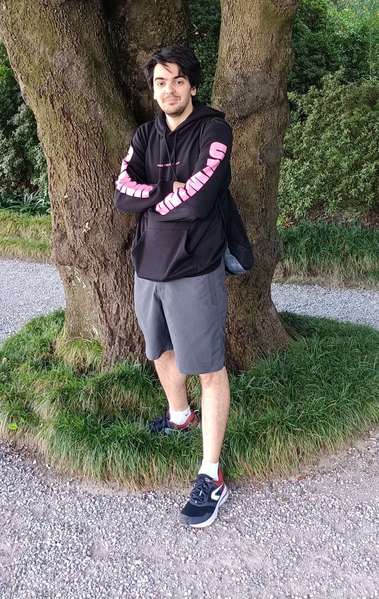

Hi CS50, I'm Francesco!
I'm 24 years old, Italian and I love programming! I've studied Pure Mathematics in Bologna, I now work at a bike shop, and I dream of becoming a programmer.
This small website, other than being the final project for CS50, is also my way of creating a small time capsule of a selection of things I've written over the years.
I have loved, for how long I can remember, writing and acting. This is, in my opinion, a pretty cool way of applying these passions to the digital world.
If you want to know more about me, don't hesitate to contact me here:
- Gmail: fr.bambina@gmail.com
- Instagram: francesco_bambina98
- LinkedIn: francescobambina